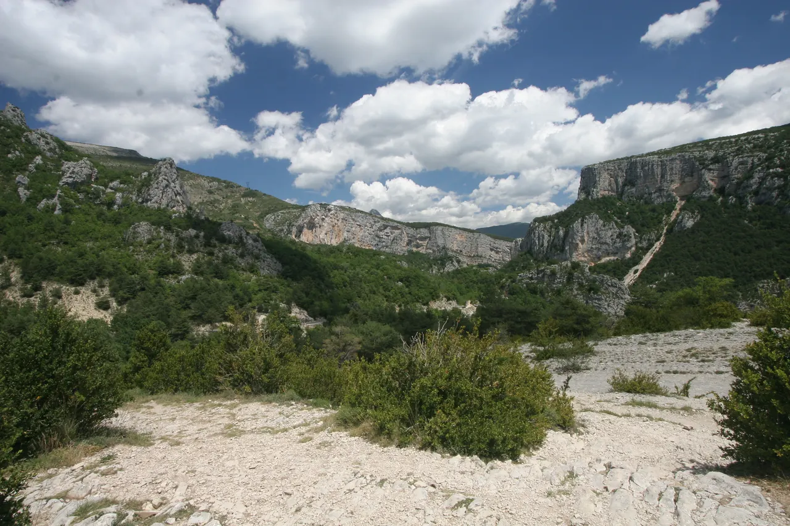
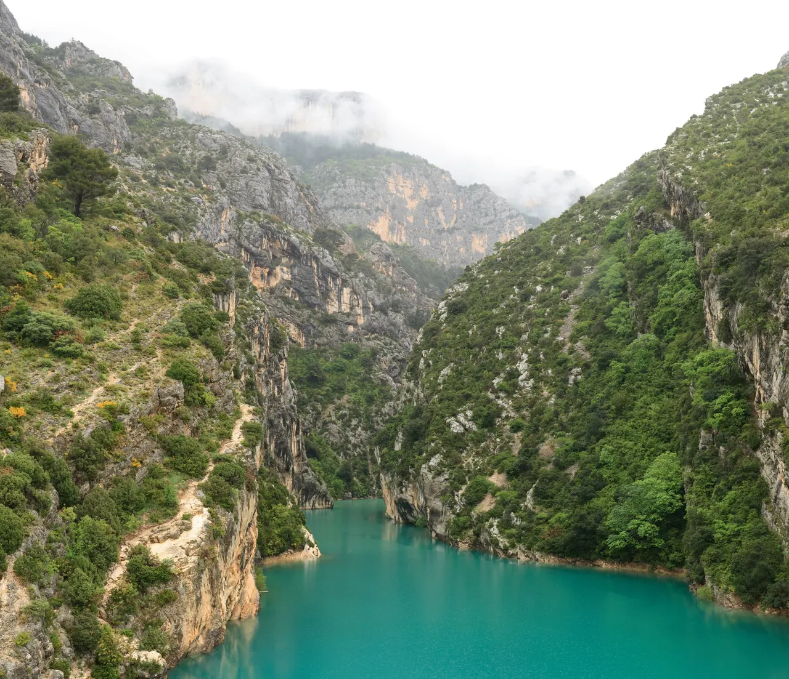

{kind=link}

Moustiers-Sainte-Marie
석회암 절벽 틈에 매달린 파이앙스(도자기) 마을. 절벽 사이 금빛 별과 262계단 위 Notre-Dame de Beauvoir 예배당이 상징이다.
Verdon 구간은 니스에서 Aix로 이동하는 하루를 단순한 이동일에서 이 여행의 자연 풍경 정점으로 바꾸는 1박이다. 유럽에서 손꼽히는 규모의 석회암 협곡과 그 서쪽 관문의 도자기 마을 Moustiers-Sainte-Marie, 협곡이 끝나며 열리는 Sainte-Croix 호수를 하루 반에 걸쳐 지난다.
대가는 운전이다. 이틀 모두 산악 도로를 포함한 장거리 운전일이고, 특히 Day 12는 이 여행 전체에서 피로도가 가장 높은 날에 속한다. 숙소는 현지에서 정하는 미정 1박이므로, 도착 전 확보가 이 구간의 최우선 액션이다.
| 날짜 | 요일 | 일정 |
|---|---|---|
| 9/9 | 수 | Nice-Ville 렌터카 인수 · Saint-Paul-de-Vence · Grasse · Route Napoléon · 협곡 북안 · Moustiers 체크인 |
| 9/10 | 목 | Moustiers 마을 · (Route des Crêtes 재확인) · Sainte-Croix 호수 · Valensole 고원 · Aix 이동 |
석회암 절벽 틈에 매달린 파이앙스(도자기) 마을. 절벽 사이 금빛 별과 262계단 위 Notre-Dame de Beauvoir 예배당이 상징이다.

Verdon 협곡 하류 입구를 내려다보는 대표 전망대. 주차 후 도보 10분에 Couloir Samson과 400m 절벽이 눈앞에 펼쳐진다.

협곡이 끝나며 열리는 청록색 인공호수. Pont du Galetas 다리에서 협곡 입구로 들어가는 물길을 내려다본다.

La Palud에서 시작하는 24km 협곡 능선 순환도로. 전망대 15곳이 이어지고 중앙 구간은 시계방향 일방통행이다.

라벤더로 이름난 고원 — 단 9월은 수확이 끝난 계절이다. 보랏빛 대신 밀밭·아몬드나무·너른 지평선을 지나는 경유 풍경으로 본다.
관광안내소 공식 목록 기준 마을과 인근에 식당 십수 곳이 등록돼 있어 성수기 직후의 9월 초 평일에도 저녁 선택지가 전무하지는 않다. 다만 개별 업소의 9월 수요일 저녁 영업은 확인되지 않았으므로 특정 업소를 전제로 하지 않는다 — 체크인 후 안내소 목록과 현장 확인으로 정하고 (재확인), 겸해서 장을 봐 간단히 해결하는 대안을 유지한다. 아침은 마을 빵집·카페 또는 숙소 조식으로 잡되 이 역시 현장 확인이 정본이다.
Moustiers-Sainte-Marie 1박(9/9 체크인–9/10 체크아웃)이 거점이다. 숙소는 미정·현지 결정이므로 도착 전 확보가 최우선이고, 예약 시 주차 조건을 함께 확인한다.
Moustiers-Sainte-Marie 마을 또는 가까운 생활권의 1박 숙소를 거점으로 삼는다. 숙소는 미정이고 현지에서 정한다 — 후보 좌표나 마을 중심 좌표를 확정 주소로 쓰지 않는다.
마을은 절벽 아래 좁은 골목으로 이루어져 있고 차량 진입이 제한적이므로, 외곽 주차 후 걷는 구조를 기본으로 한다. 주차장 위치·요금은 (재확인) 대상이다.
늦은 귀가 — Day 13이 늦어지면 Route des Crêtes 루프를 초입 전망대 1–2곳으로 줄이고, 다음으로 호수 물가 하강·Valensole 정차를 생략한다.
Day 12 Nice-Ville 09:00 렌터카 인수 후 Saint-Paul·Grasse를 거쳐 Castellane 방면으로 진입한다. 지연 시 Grasse부터, 다음 Point Sublime을 삭제해 일몰 전 Moustiers 체크인을 지킨다.
9.9(수) · Day 12 · Moustiers-Sainte-MarieDay 13 오전 마을·Beauvoir 계단 후 Route des Crêtes(개방 시)와 Sainte-Croix 호수를 거쳐 Valensole 고원을 통과, 15:00 이후 Aix 체크인에 맞춘다.
9.10(목) · Day 13 · Aix-en-Provence이 구간의 이동은 전부 렌터카다. 대중교통 대안이 사실상 없는 지역이므로, 차량 문제 발생 시의 대안은 이 구간을 건너뛰고 Aix로 직행하는 것뿐이다.